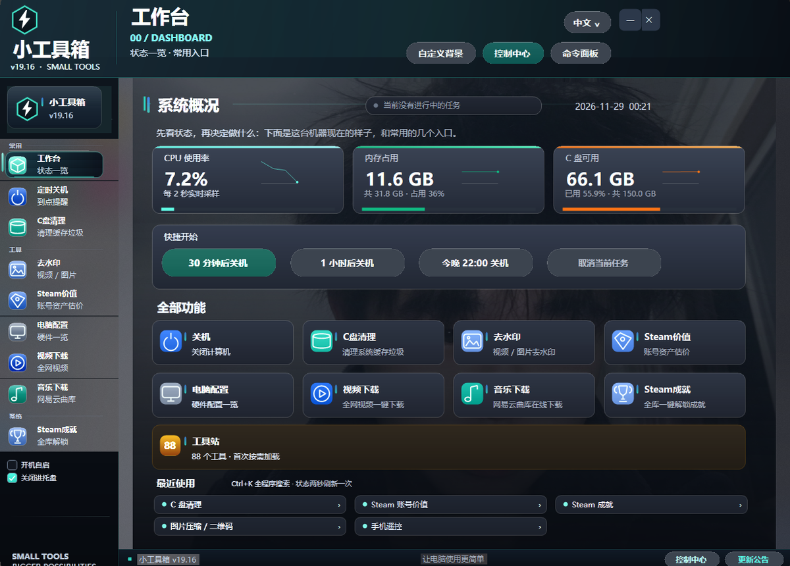
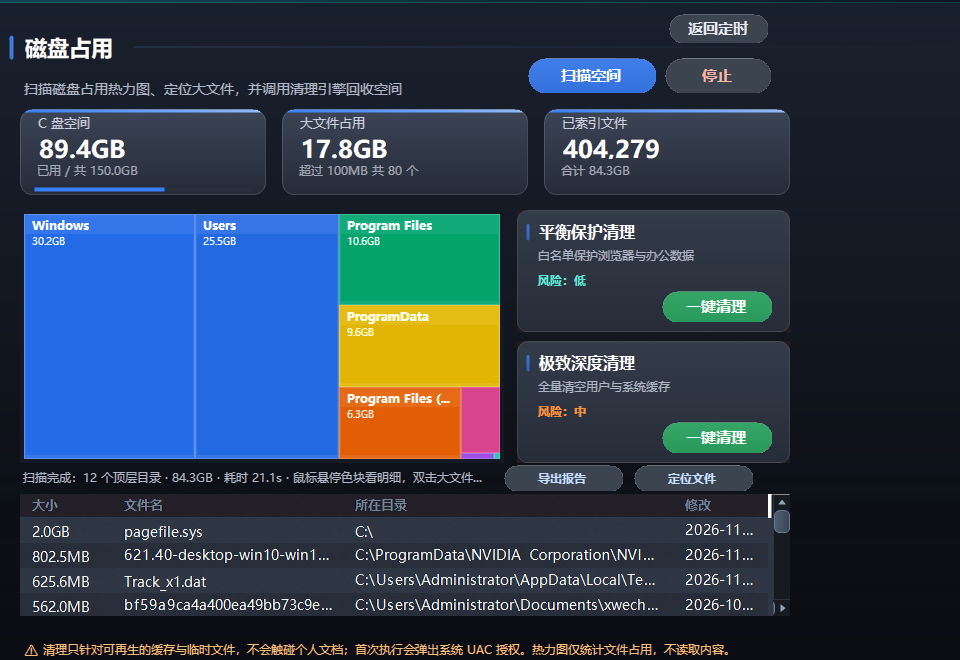
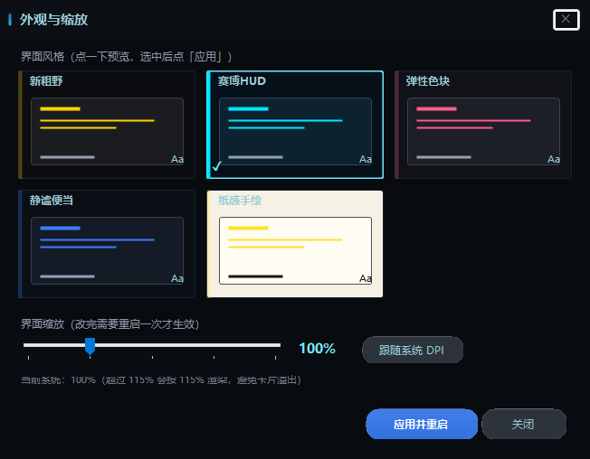

一台电脑的
小事，交给它。
EVERY SMALL THING / BECOMES SPEED.
20+ 项原生工具装进一个 3.38 MB 的 exe；88 个网页工具首次打开按需下载 22.7 MB，之后本地缓存秒开。定时关机、清理、下载、录屏、互传，都从一个入口起跑。

DOT LAB
黑点，
听你的。
输入 1–8 个字，黑点会排成你的句子；点一下画布或按“抖散”，它们会散开，再自己聚拢。只在本机绘制，不上传。
DUEL
两个火柴人，
全用黑点。
三回合、八次命中，拳、腿、头轮番上场，全部由黑点组成，没有一根实线。命中处会先散成点尘，再重新凝聚。点擂台补一拳，也可以换招、开声音或直接叫停。
SYSTEM OPS
先把系统，
清干净。
C 盘占用、后台残留、重复文件、忘记关机——这些不应该占据你的注意力。开机之后，先让系统回到干净状态。
定时关机
30 分钟、1 小时、今晚 22:00，到点自动收尾；关机前 60 秒弹出撤销，不会把没保存的东西一起带走。
C 盘清理
缓存、日志、缩略图、回收站分类扫描，按大小排序。删进回收站，清错了还能捞回来。
电脑配置
CPU、内存、磁盘、显卡、系统版本一屏读全；不用再翻设备管理器猜型号。
一键重装
系统崩了也能从桌面重来，保留驱动与常用设置；装在口袋里的恢复入口。

CAPABILITY
能力不是堆的，
是排好的。
系统、媒体、文件、效率，四个模块各就各位。切一个标签，看这一类到底能替你做什么。
系统 / SYSTEM
把电脑的日常维护压成几个按钮：清理、关机、看清配置、必要时重装。没有后台常驻，也没有看不懂的进程树。
媒体 / MEDIA
从链接到本地文件，下载、去水印、录屏、转 GIF、压图片，一条链路走完。支持队列，不用守在电脑前。
文件 / FILE
改名、转换、查重、加密、算哈希。处理一整文件夹，不是一个个点。敏感文件只在本地加密，密钥不离开这台机器。
效率 / FLOW
用热键、指令舱和局域网剪贴板，把重复动作压到一次按键。手机和电脑在同一 Wi-Fi 下，复制粘贴不用发微信。
一整座工具站，
离线装进口袋。
图像、文档、开发、媒体、办公、生活、设计、安全、数据、硬件、趣味——11 类，88 个开源工具。自带搜索与分类，文件不上传，断网也能开。

APPEARANCE
同一套工具，
五张脸。
新粗野、赛博 HUD、弹性色块、静谧便当、纸感手绘。点一下缩略图预览，95–115% 缩放，跟随系统 DPI。
换个皮肤，
换一种工作状态。
白天用纸感手绘，夜里切赛博 HUD；开会投屏用静谧便当，自己折腾用新粗野。皮肤、音色、缩放都在外观设置里，改完自动重启生效。
示意预览 / 实际皮肤以程序内为准

CONTROL
公司电脑，
也能放心铺开。
策略可下发、敏感动作留痕、更新包验签、发布链有 SBOM；新版本另有构建来源证明。每条企业级声明都在信任中心给出可核验入口。个人用户不配置，就完全不受影响。
策略管控 / POLICY
程序目录或 %ProgramData%\MiniToolbox\策略.json 可禁用在线更新、禁用诊断导出、禁用指定功能页、强制详细日志。
审计留痕 / AUDIT
启动退出、系统清理、一键重装、安装更新、拒绝更新、导出诊断，逐条写入 日志\审计.log。
更新验签 / VERIFY
下载后先比对 SHA256，再检查证书指纹。不是同一张证书签的包，直接拒绝替换。
部署脚本 / DEPLOY
部署.ps1 支持安装、卸载、状态、机器级策略模板，装到 %LOCALAPPDATA%，无需管理员。
发布可核验 / SUPPLY
源码公开、Windows CI 每次编译；新版本 Release 附 SHA256SUMS、SBOM 与构建来源证明，v19.15 旧资产已补清单与 SBOM；tag 必须与源码版本一致。
治理与支持 / GOVERNANCE
分支保护、评审规则、私密漏洞披露、版本支持与回滚流程都有文档；不声称 ISO、SOC 2 或等保认证。
// 只收紧，不放宽；删掉文件即恢复默认 { "禁用在线更新": true, "禁用诊断导出": false, "详细日志": false, "禁用功能": ["video", "music"] }
策略字段说明 / FIELD NOTES
禁用在线更新 关闭程序内更新检查；禁用诊断导出 阻止“关于”页导出诊断包；详细日志 记录更细的运行事件；禁用功能 按功能 ID 隐藏入口。策略只收紧权限，不会放宽默认行为。
OPEN SOURCE
代码公开，
问题有人接。
完整 C# 源码、构建脚本、GitHub Actions、许可证与安全披露流程都在仓库里。不是只放一个 exe 的下载页。
源码可构建 / SOURCE
定时关机.cs + Src/ 144 个 C# 文件，入口、功能页、皮肤、诊断、策略与验签分层；build.ps1 一键编译、签名、算哈希、打包。
许可证 / LICENSE
原始代码采用 MIT，允许读、改、二次分发；FFmpeg、7-Zip、工具站等第三方组件保留各自许可证，单独列明。
安全披露 / SECURITY
可被利用的漏洞请不要开公开 Issue。走 GitHub 私密安全公告或备用邮箱，附版本、SHA256、复现步骤与影响范围。
贡献与反馈 / CONTRIBUTE
Issue 模板要求版本、复现与脱敏日志；PR 模板要求构建结果、体积变化与许可证检查。版本变更统一记在 CHANGELOG。
DEPLOY
下下来，
直接开跑。
不写注册表、不留后台服务、不要求管理员。想卸载，删掉 exe 就行。
小工具箱 v19.16
单文件主程序 3.38 MB，内置 20+ 项原生工具；88 个网页工具改为首次打开按需下载离线包（22.7 MB），之后本地缓存秒开。
THIS UPDATE / 本次更新
- 体积精简：exe 从 26.08 MB 降至 3.38 MB，7z 安装包仅 1.23 MB。
- 工具站离线包不再内嵌：优先读取程序目录 zip，缺失时首次打开自动下载并缓存。
- 清理旧版本包、测试程序、临时编译目录、调试截图与重复资源，项目目录释放约 322 MB。
- FFmpeg / 视频组件包改为官网按需下载，项目目录从 386.9 MB 降至 64.4 MB。
- 原有控制中心、任务中心、皮肤与更新链路保持不变。
离线环境可另下 Release 资产 ToolSite.zip，放到程序目录即可免下载。
程序使用自签名证书，没有公共 CA 信誉链，Windows SmartScreen 可能先拦一下。不是查毒结论，也不代表文件被改动；先核对哈希，再决定是否运行。
查看 3 步校验 ↓ · 安全披露政策 ↗Get-FileHash .\MiniToolbox.exe -Algorithm SHA256
在下载目录打开 PowerShell 运行，输出应与上方 SHA256 完全一致；不一致就不要运行。哈希一致只能证明文件完整，不能替代杀毒扫描。Release 资产另附 SHA256SUMS 与 SBOM；新版本另有构建来源证明。
QUICK START / 常见问题
需要安装吗？
不需要。主程序单个 exe 双击就跑，退出不写注册表、不留后台服务；88 个网页工具首次打开按需下载 22.7 MB 离线包，之后本地缓存。想卸载直接删文件。
会联网吗？
只在检查更新、查 Steam 价格、下载你指定的内容时联网；工具站与剪贴板、清理记录、配置都只存本地。
为什么提示“未知发布者”？
程序使用自签名证书，作者本机可信；他人电脑首次运行可能提示。可对照上面的 SHA256 确认文件未被改动。
GitHub 直链慢怎么办？
先换 7z 包，体积更小；仍慢可换网络或 DNS，再去 Releases 页重试。无论走哪个入口，下载后都要对照同一个 SHA256。站点不放第三方镜像，避免镜像被替换后哈希对不上。
工具站需要 WebView2 吗？
绝大多数 Win10 / 11 已带 Edge WebView2 运行时。纯精简系统若缺失会提示重试，也可点窗口右上角「↗」用系统浏览器打开在线版。
企业级有哪些可核验的？
分支保护、Windows CI、SHA256、SBOM、新版本构建来源证明、MIT、私密漏洞披露、策略与审计都有可点开的入口；项目不声称 ISO、SOC 2 或等保认证。详见 企业信任中心 ↗。
CHANGELOG / 最近版本
v19.16 · 移除实用工具与主题色
首页移除「实用工具」磁贴与独立小窗；托盘移除「主题色」菜单，主题色配置与同步项一并删除；工具站磁贴改为首页整行。exe 3.38 MB，7z 1.24 MB。
v19.15 · 体积精简到 3.37 MB
整站工具包从 exe 中移出，改为同目录离线包或首次打开按需下载；清理旧版本、测试程序与临时数据，exe 由 26.08 MB 降至 3.37 MB，7z 仅 1.23 MB。
v19.13 · 工具站 88 个
工作台新增「工具站」磁贴，整站 88 个开源工具离线内置；11 类、搜索、分类、离线可用。该版曾因整站资源使主程序增至 26 MB，v19.15 已外置。
v19.12 · 反馈邮箱
诊断包导出后可自动预填邮件并打开邮箱，收件人为作者邮箱；无桌面邮件应用时打开 163 网页邮箱。